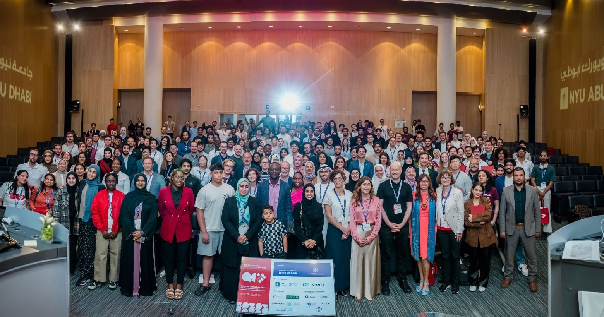
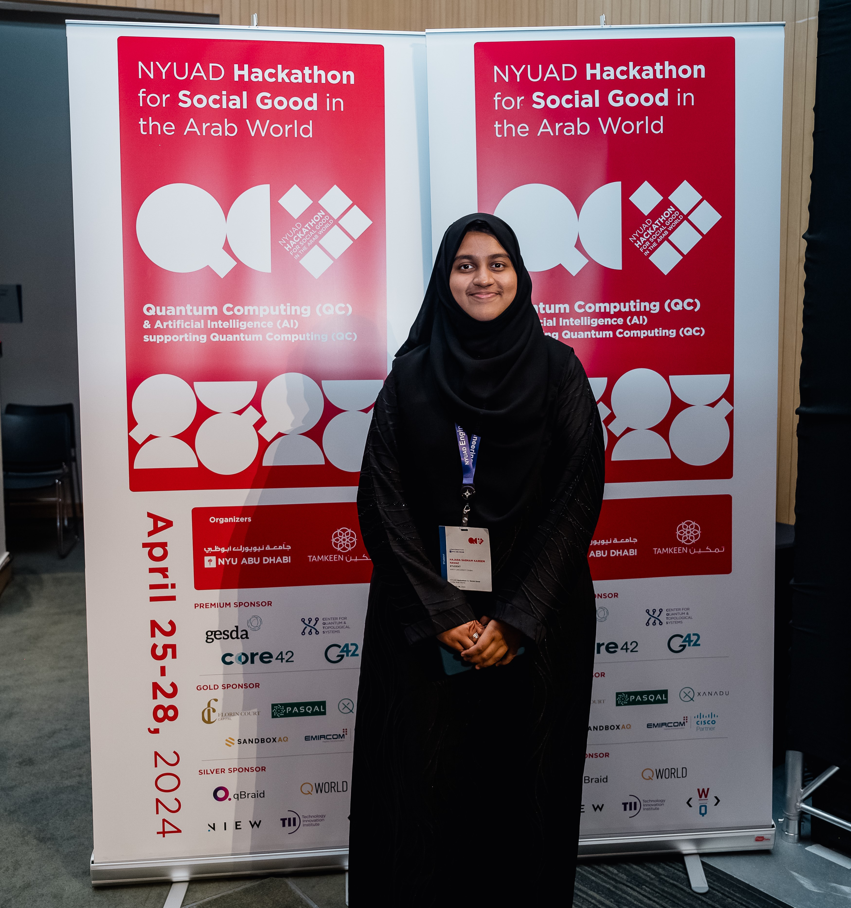
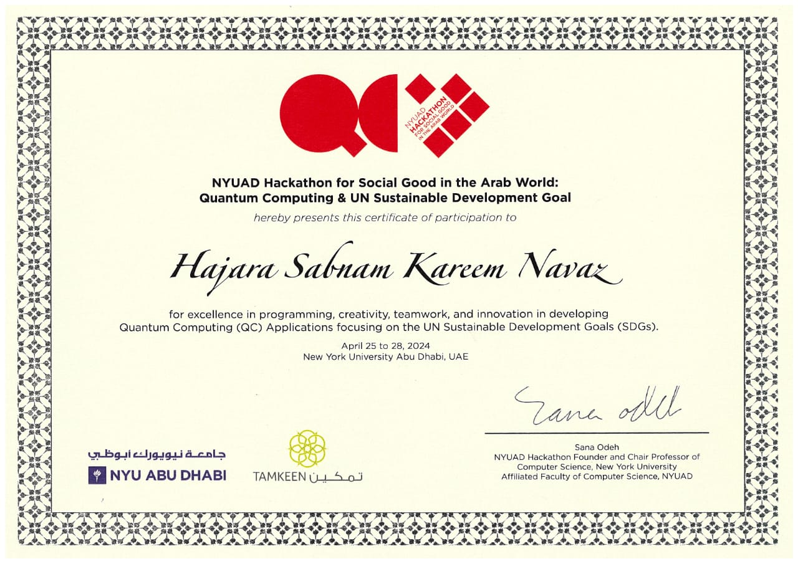
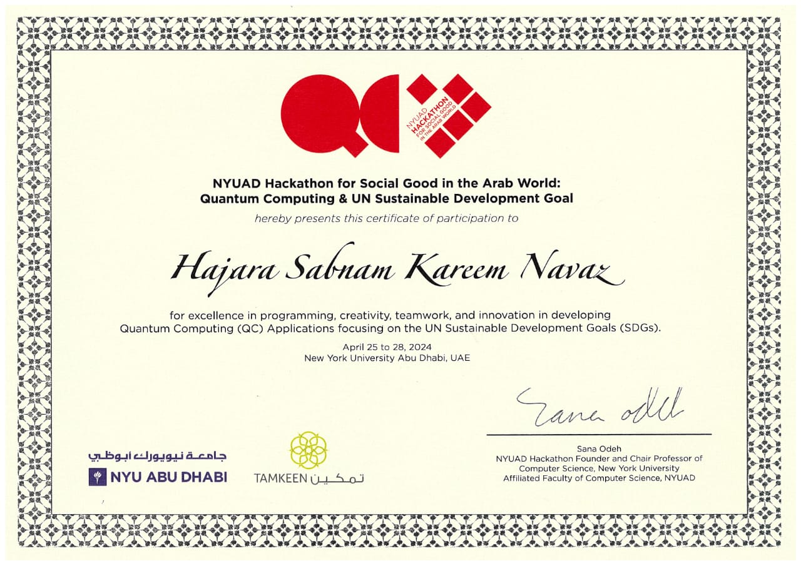

The NYUAD Hackathon for Social Good in the Arab World convened a diverse group of 200 participants from across the globe,
selected from a competitive pool of over 1000 applicants. Hosted at New York University Abu Dhabi, the hackathon focused
on the intersection of quantum computing and the United Nations Sustainable Development Goals (UNSDGs). With an intensive
four-day timeline, participants delved into workshops led by QWorld, gaining insights into quantum cryptography, encryption
techniques, and quantum machine learning.
Teaming up with fellow innovators from around the world, my colleagues and I embarked on a mission to develop a cutting-edge
solution. Our project centered on creating a web application leveraging quantum computing to predict diabetes, blending quantum
machine learning algorithms with advanced encryption methods. Over the course of the hackathon, we worked tirelessly to refine
our concept, drawing inspiration from the diverse perspectives and expertise of our team members.
The culminating moment arrived as we presented our project on stage, receiving valuable feedback from mentors and judges.
Beyond the accolades, the hackathon provided a transformative experience, showcasing the immense potential of technology to
address pressing societal challenges. It was a testament to the power of collaboration and innovation, leaving an indelible mark
on my journey of personal and professional growth.
Hajara Sabnam

12th NYUAD Hackathon for Social Good in the Arab World




 
